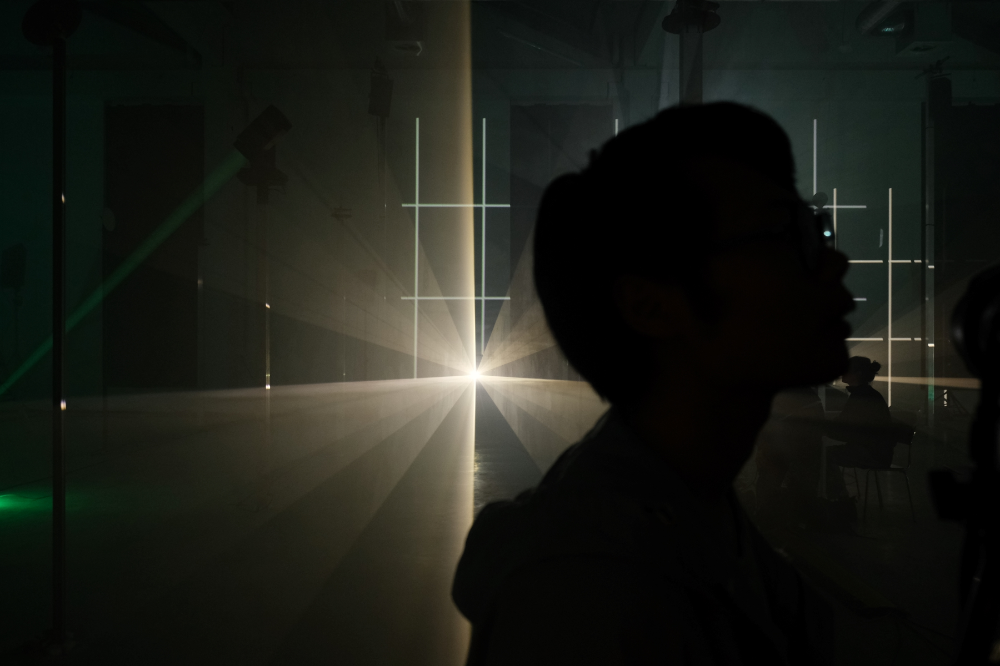
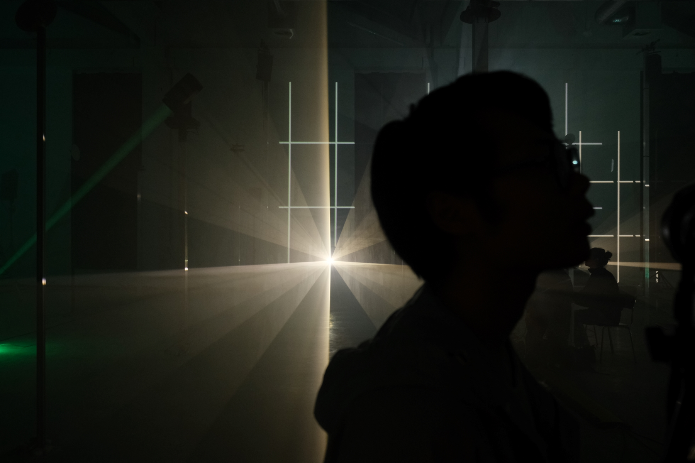

On the occasion of the 100th birthday of the composer, architect and multimedia artist Iannis Xenakis, after studied his Polytope de Cluny (1972) together with students of both faculties of the University of the Arts Bremen, an early milestone of immersive digital media art. I interpret the original audio tracks on a 3D loudspeaker setup and juxtapose them with projection mapping incorporated as part of a more complex light production, developed specifically for Speicher XI A.